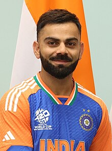

Biography
Virat Kohli, born on November 5, 1988, in Delhi, India, is one of the most celebrated cricketers of the modern era. Known for his aggressive playing style and determination, he has established himself as a top batsman in international cricket. Kohli is regarded as a master of chasing runs, and his records in ODIs and T20s are a testament to his skill and commitment to the game.